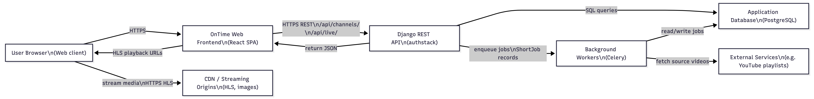
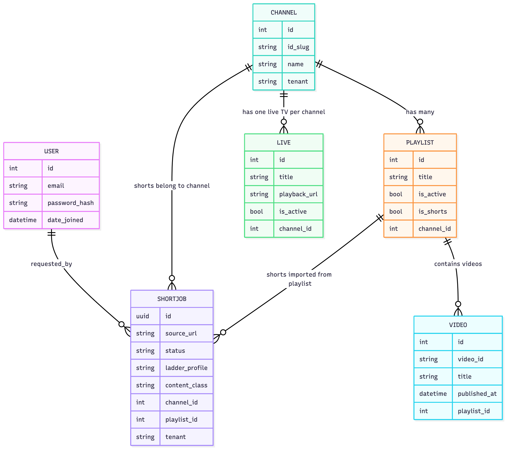

Web Application Testing – OnTime Ethiopia
Organization: AI TECHNOLOGIES PLC / ኤ አይ ቴክኖሎጂስ ኋላ/የተ/የግ/ማ
Platform: OnTime Ethiopia (Web Application)
Prepared for: Information Network Security Administration (INSA)
Date: November 2025
1. Business Architecture and Design
1.1 Background of the Organization
AI TECHNOLOGIES PLC (ኤ አይ ቴክኖሎጂስ ኋላ/የተ/የግ/ማ) is an Ethiopian technology company focused on building digital platforms that support media, communication, and innovative services aligned with the country’s digital transformation agenda. The company delivers scalable software solutions and streaming platforms for global and regional audiences.
On behalf of the OnTime Ethiopia team, we would like to extend our sincere appreciation to the Information Network Security Administration for its continuous efforts in advancing Ethiopia’s digital transformation and ensuring the nation’s cybersecurity resilience. The Administration’s leadership in creating a secure and empowering digital environment plays a crucial role in strengthening innovation, public trust, and national development.
1.2 Introduction
This document provides technical and security-related information about the OnTime Ethiopia web application. It is intended to support the Information Network Security Administration (INSA) in planning and executing a penetration test / security assessment of the platform.
It should be read together with the Mobile Application Testing and API Audit Information documents, which describe the corresponding mobile client and backend APIs in more detail.
1.3 Objective of this Certificate Requested
The objective is to obtain an independent security assessment and certificate for the OnTime Ethiopia web application, verifying that it has been tested against common web application security vulnerabilities and that identified issues can be remediated to strengthen the platform’s security posture.
1.4 Business Architecture (Summary)
- Product: OnTime Ethiopia – an OTT/streaming platform providing live TV, shorts, and related content to end users.
- Core actors:
- End users (web and mobile) consuming video content.
- Admins/editors using an internal web portal for content management and configuration.
- Core backend: Django REST Framework application exposing REST APIs for channels, live TV, shorts ingestion, playlists, and authentication.
- Frontend: React-based web frontend consuming these APIs over HTTPS.
1.5 Data Flow Diagram (Text Description)
- User’s web browser connects over HTTPS to the OnTime Ethiopia web frontend.
- The web frontend sends HTTPS REST API requests to the Django backend (e.g.
/api/channels/, /api/live/, /api/channels/shorts/ready/feed/).
- The backend reads/writes data from the application database (e.g. PostgreSQL) storing channels, playlists, live metadata, users, shorts jobs, etc.
- Celery/background workers process shorts ingestion jobs and interact with external services (e.g. YouTube playlists, storage/CDN) and update job status in the database.
- The frontend receives JSON responses and renders UI accordingly, while media (HLS streams, images) is delivered from streaming endpoints/CDN over HTTPS.

1.6 System Architecture Diagram (Text Description)
-
Client Layer
- Web browser (desktop/mobile) running the OnTime Ethiopia web SPA.
-
Application Layer
- Django REST API application (gunicorn/uWSGI) behind a reverse proxy/load balancer.
- Celery workers for background processing of shorts ingestion and media-related tasks.
-
Data Layer
- Relational database (e.g. PostgreSQL) for core application data.
- Object storage / CDN for video and image assets.
-
Security/Perimeter
- Reverse proxy/load balancer providing TLS termination and basic protection.
- Network firewall restricting non-essential ports.
- (If applicable) Additional WAF or cloud-based protections.
1.7 Database Entity-Relationship Diagram

1.8 Threat Model Mapping (Web Application)
The following high-level threat model summarizes the main assets, likely threats, and key mitigations implemented for the OnTime Ethiopia web application.
-
Assets
- User accounts and authentication credentials.
- Session tokens / cookies and active user sessions.
- Channel, playlist, and live TV metadata stored in the database.
- Administrative functions and internal configuration pages.
- Tenant-specific data and content belonging to different organizations.
-
Threats (examples)
- Injection (SQL/ORM misuse): Attempting to inject malicious input into API parameters or queries.
- Cross-Site Scripting (XSS): Injecting malicious scripts into user-facing pages through untrusted input.
- Cross-Site Request Forgery (CSRF): Forcing authenticated users to perform unintended actions via crafted links or forms.
- Broken Authentication / Session Management: Stealing, replaying, or abusing session tokens or cookies.
- Broken Access Control / Privilege Escalation: Accessing admin functions or other users’ data without proper permissions.
- Insecure Direct Object References (IDOR): Accessing resources by guessing or tampering with identifiers in URLs or API requests.
- Sensitive Data Exposure: Intercepting credentials or personal data if HTTPS or configuration is incorrect.
-
Mitigations (high level)
- Use of Django ORM and parameterized queries instead of raw SQL to reduce injection risk.
- Server-side input validation and output encoding for user-controlled data.
- CSRF protection enabled for state-changing requests when cookie-based sessions are used.
- Authentication and session management handled by Django, with secure password hashing and session timeout.
- Role-based access control (RBAC) for admin vs. normal users, implemented via Django permissions and view-level checks.
- Tenant-aware filtering and checks to ensure users cannot access data from other tenants.
- Enforcement of HTTPS/TLS in production and use of secure cookie flags (
Secure, HttpOnly) where applicable.
2. Features of the Web Application
2.1 Development Frameworks
- Frontend: React-based single-page application (SPA).
- Backend: Django + Django REST Framework (DRF).
- Task Queue: Celery for asynchronous processing (e.g. shorts ingestion and transcoding).
2.2 Libraries (Plugins)
-
Frontend (examples):
- React Router for client-side routing.
- HTTP client (e.g. Axios/fetch wrapper) for API calls.
- UI component libraries for layout, tables, and forms.
-
Backend (examples):
- Django REST Framework for API endpoints.
- Celery + message broker (e.g. Redis/RabbitMQ) for background tasks.
- yt-dlp and related tooling for shorts ingestion from external playlists.
2.3 Third-Party Integrations
- External video sources (e.g. YouTube playlists) for shorts ingestion.
- CDN / storage for hosting and delivering HLS playlists and media assets.
- Optional identity providers (e.g. Google sign-in) for authentication, depending on environment.
2.4 Custom Development
- Custom admin web UI to manage channels, playlists, live TV metadata, shorts ingestion jobs, and feature flags.
- Custom Django REST endpoints for:
- Live TV channels and slug-based lookup.
- ShortJob ingestion pipeline (import, queue, process, mark READY, randomized feed).
- Tenant-aware content separation.
2.5 Actor / User Types
- Anonymous users: Can access public landing pages (depending on configuration).
- Authenticated end users: Can log in to the OnTime Ethiopia platform and consume authorized content.
- Admin / Editor users: Manage content, playlists, shorts, and configurations via the internal web admin portal.
- System / service accounts: Used by backend workers and integrations.
2.6 Dependencies / System Minimum Requirements (Web Frontend)
- Client: Modern browser with HTML5 support and JavaScript enabled.
- Network: Stable internet connection for media streaming over HTTPS.
- Server: Linux-based server with Python (Django), database (e.g. PostgreSQL), and message broker (e.g. Redis/RabbitMQ); Node.js toolchain for building the frontend.
2.7 Implemented Security Standards
- Web traffic served over HTTPS in production environments.
- Authentication and authorization enforced for admin and protected operations.
- Role-based access control (RBAC) for admin features.
- CSRF protection for state-changing requests when using cookie-based sessions.
- Input validation and server-side validation on critical API endpoints.
- Consideration of OWASP Top 10 risks in design and implementation.
2.8 Devices that May Impact Penetration Testing
- Firewall: Network firewall restricting inbound access to required ports (e.g. 80/443, SSH).
- Reverse Proxy / Load Balancer: May enforce rate limiting, TLS policies, and IP filtering.
- Web Application Firewall (WAF) (if applicable): May inspect and block certain payloads or exploit attempts.
Penetration testers should be aware of these controls, as they may affect test results.
2.9 Non-Functional Requirements (Web Application)
The following non-functional requirements describe how the OnTime Ethiopia web application is expected to behave under normal operation:
-
Performance and responsiveness
- The public landing pages and main content listing pages are expected to respond within a few seconds under normal network conditions.
- API responses for typical read operations (e.g. channel listing) are designed to remain performant for the expected number of channels and users.
-
Availability and reliability
- The service is intended to be available during normal business and viewing hours, subject to hosting provider SLAs.
- Regular backups of the database and configuration are performed at the infrastructure level to support recovery from incidents.
-
Scalability
- The backend can be scaled horizontally by adding additional application instances behind the reverse proxy/load balancer.
- Database and caching strategies can be tuned as usage grows.
-
Maintainability
- The codebase is organized into Django apps and reusable React components to ease ongoing maintenance and feature development.
- Dependency management is handled via standard tooling (pip, npm/yarn) and updated regularly.
-
Security as a cross-cutting requirement
- Security considerations (authentication, authorization, input validation, logging, and secure communication) are treated as core non-functional requirements and are described in more detail in the security and secure coding sections of this document.
3. Scope of Testing (Web Application)
| Name of the Assets to be Audit |
URL/IP |
Test Account as required by the tester |
| Public web portal/sites |
https://aitechnologiesplc.com/ |
Public browsing (no login) as applicable |
| Public application (OnTime) |
https://ontime.aitechnologiesplc.com/ |
End-user test account (adminweb/Root@1324) |
| Internal web portal |
https://ontime.aitechnologiesplc.com/ |
Admin/editor test account with appropriate admin privileges |
| Internal local applications |
N/A or not in scope (unless otherwise specified) |
To be provided if any additional internal-only apps are included |
Notes: The same base URL may expose both public and authenticated functionality depending on login status and user role.
4. Security Functionality
| Security Functionality |
How the Security Functionality Has Been Implemented |
| User Roles and Access Control |
Roles are defined at the backend, distinguishing end users from admin/editor accounts. Admin features are only accessible to authenticated users with appropriate permissions, enforced in Django viewsets and permissions. |
| Authorization Mechanisms |
Protected API endpoints require authenticated requests (session or token-based). Authorization checks are enforced server-side to ensure that only authorized users can access or modify protected resources. |
| Input Validation and Sanitization |
Client-side form validation is combined with server-side validation in Django serializers/models. Inputs are validated and sanitized before being processed or stored to reduce risks such as injection and malformed data. |
| Session Management |
Authentication is managed by Django’s authentication/session framework and/or token-based mechanisms. Sessions have defined lifetimes, and users can log out to invalidate their sessions. Secure cookie attributes are used where applicable. |
| Error Handling and Logging |
In production, API error responses avoid exposing sensitive internal details. Detailed errors and exceptions are logged server-side along with important security events (such as authentication failures and admin actions). |
| Secure Communications |
All frontend–backend communication is conducted over HTTPS in production deployments. TLS is handled at the reverse proxy/load balancer, and mixed-content access is avoided where possible. |
5. Secure Coding Standards
5.1 Coding Rules / Guidelines
- General alignment with OWASP Secure Coding Practices.
- Use of Django ORM instead of raw SQL to reduce SQL injection risks.
- Avoidance of unsafe JavaScript constructs (e.g.
eval) in the frontend.
- Code review practices for sensitive or security-relevant changes.
5.2 Secure Coding Practices Used
-
OWASP Secure Coding Practices
- Consideration of OWASP Top 10 risks (authentication, access control, injection, XSS, CSRF, etc.) in design and implementation.
-
Secure Input Handling
- Server-side validation for all critical inputs via Django forms/serializers.
- Client-side validation to enhance user experience, but not relied upon for security.
-
Secure File Handling
- Validation of uploaded files (e.g. type/size constraints).
- Storage of media files in dedicated locations separate from application code.
-
Authentication and Session Management
- Use of Django’s authentication mechanisms for handling user credentials and sessions.
- Passwords stored using secure hashing algorithms (no plaintext storage).
- Session timeout and logout capabilities provided to users.
-
Software Patching and Updates
- Regular updates of Python/Django, React, and third-party libraries using dependency management tools (pip, npm/yarn).
- Monitoring of third-party libraries for security advisories and vulnerability patches.
-
Review of Third-Party Components
- Preference for well-maintained, community-vetted libraries.
- Periodic review of third-party components and removal or replacement of unmaintained libraries when feasible.
-
Secure Communication
- Enforcement of HTTPS for production environments to protect data in transit.
- Proper TLS configuration at the reverse proxy/load balancer level.
6. Previous Security Test Reports
At the time of preparing this document, there is no formal previous external security test report for this specific web application. Therefore:
- First phase security testing document: Not available / Not previously conducted.
- Re-audit security testing document: Not available / Not previously conducted.
If prior internal security reviews or tests exist, they can be shared separately as needed.
Company: AI TECHNOLOGIES PLC / ኤ አይ ቴክኖሎጂስ ኋላ/የተ/የግ/ማ
| Name |
Role |
Address (Email and Mobile) |
| Elnatan Nebiyou |
Developer |
Email: elnatan.nebiyu@gmail.com |
|
|
Mobile: +251911429639 |